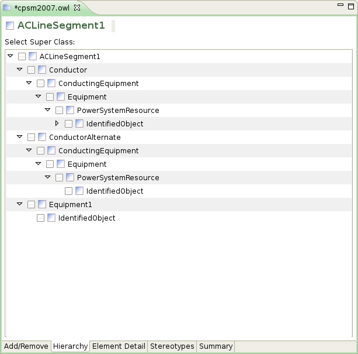

Restriction Tab
The Restriction tab narrows what the schema allows for the element selected in the Outline view. For a class, it decides whether the class is concrete and which profiled classes it inherits from. For an attribute or association, it sets the cardinality and, for an association, whether it is By Reference and which classes it may refer to. Together these restrictions shape the schema that the builders generate from the profile.

Placeholder from the legacy help, to be replaced: the Restriction tab with a class selected, showing the Select Super Class tree. In this older release the tab was labelled Hierarchy, and the Concrete and descriptor checkboxes above the tree are not shown.
Working from the Outline View
What the tab shows depends on the element selected in the Outline:
| Selected in the Outline | The tab shows |
|---|---|
| A class | "Restrict this class." with Make this class concrete, Set concrete class as descriptor, the class cardinality and the Select Super Class tree. |
| An association | "Restrict this property." with By Reference, the cardinality, the inverse cardinality when the profile includes the inverse role, and the Select Associated Class or Classes tree. |
| An attribute | "Restrict this property." with the cardinality and the attribute's datatype. |
| The profile itself, an enumeration, a compound or anything else | "Select a class or property to restrict or" with a Goto Add/Remove Page button. |
Restricting a Class
Make this class concrete marks the class as concrete, so that the generated schema allows instance data to declare objects of that class. A class that is not concrete is abstract: it can still be used as a parent class or as the type of an association, but instance data cannot declare objects of it directly. The checkbox is not available for anonymous classes, which are never concrete.
Clearing Make this class concrete also resets the class cardinality to 0..* and clears the descriptor setting described below.
Select Super Class lists the classes in the profile that the selected class can inherit from, following the schema's inheritance. Check a class to make it the parent of the selected class in the profile. This is how a profile keeps or flattens the schema's inheritance.
Descriptor Classes
Set concrete class as descriptor gives the class the Description stereotype. This is an IEC convention with a special meaning in RDFS target profiles: the profile describes objects that are defined in another profile, adding information to them rather than defining them. In instance data, such an object refers to an object that already exists in another data set, rather than declaring a new one.
For example, in the CGMES Topology profile, ConnectivityNode and DCNode are descriptor classes. Both classes are defined in the Equipment profile, and the Topology profile adds only the association that assigns each node to its TopologicalNode or DCTopologicalNode. The AsciiDoctor builders show such a class with "(Description)" after its name.
The checkbox is enabled only while Make this class concrete is checked, and unchecking Concrete also clears it, because an abstract class cannot be a descriptor. In the Outline view, a descriptor class has its own icon.
Cardinality
The Min and Max fields set the cardinality of the selected property, or of a concrete class. The checkboxes beside them are shortcuts that stay in step with the fields:
| Checkbox | Equivalent to |
|---|---|
| At least one | Min of 1 or more. Clearing it sets Min to 0. |
| At most one | Max of 1. |
| Unbounded | Max of * (no upper limit). |
For a concrete class, what the cardinality means depends on the profile's target. In an XSD and JSON Schema profile, it constrains how many objects of the class are permitted in the instance data. In an RDFS profile, class cardinality has no effect. See Profile Targets.
A profile can only narrow the cardinality the schema defines, never widen it. Where the schema leaves no room to narrow a bound further, its field and checkbox are disabled.
When the profile includes both roles of an association, the tab also shows Inverse cardinality on the class side role end, with its own Min, Max and checkboxes, so that both ends can be set from either role.
By Reference
By Reference marks an association so that the generated schema defines it as a reference: instance data identifies the associated object instead of containing it. What that means for the instance data depends on the profile's target; see the By Reference option on the Add/Remove tab and Profile Targets. The checkbox is not available for attributes.

Placeholder from the legacy help, to be replaced: the cardinality fields and the By Reference checkbox for a selected property. The layout and tab labels are from an older release.
Associated Classes
For an association, Select Associated Class or Classes lists the classes the association can refer to: its type in the schema and that type's subclasses that are in the profile. Check the classes that instance data may use at this end of the association. Checking more than one allows any of them.
Attributes and Datatypes
For an attribute, the tab shows Datatype is followed by the attribute's type. When the type is a CIM datatype (a class with the CIMDatatype stereotype), the tab also shows its Initial value, Unit and multiplier (Mult) from the schema. For other types it shows the attribute's Initial Value when the schema defines one. These values are for information; they are set in the schema, not in the profile.